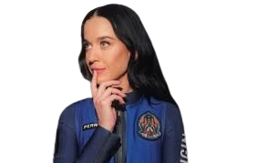

Katy Perry no espaço
Apesar do caráter histórico, a viagem recebeu críticas por parte do público e de celebridades, que questionaram o alto custo e a utilidade científica limitada da missão, considerando-a um exemplo de turismo espacial elitista. Em resposta, as participantes destacaram o valor simbólico do voo, enfatizando a inspiração que ele pode proporcionar a futuras gerações de mulheres interessadas na exploração espacial. Com essa jornada, Katy Perry não apenas quebrou barreiras ao se tornar a primeira pop star a cantar no espaço, mas também contribuiu para ampliar a representação feminina na exploração espacial.
